INNERSTAR-01 : Reddening
Audio-Visual Fulldome Performance / Screening
2021-2023
Dates:
AUG. 10&17 2024: Melbourne International Film Festival - Melbourne
MAR. 21 2024: SAT Fest - Montréal
OCT. 20-22 NOV. 17-19 2023: FUTURE VISION LAB - Taipei
FEB. 25&26 2023: FUTURE VISION LAB - Hualien (performance)
NOV. 19&20 2021: FUTURE VISION LAB - Taipei
The work is also available for viewing on Apple Vision Pro via Sandwich Vision.
INNERSTAR is an audio-visual series co-presented by HUANG Wei and CHENG Dao-Yuan. The concept is based on the relationship between the universe and mind, inspired by astronomical phenomena and the exploration of consciousness and existence from a philosophical perspective.
INNERSTAR-01: Reddening is the first work in this series. Reddening refers to the interaction between interstellar matter and light, resulting in scattering and wavelength shifts. Using relevant data and physical characteristics as the reference basis for visual and sound, an audio-visual immersive experience is presented with surround sound and dome projection. Soaked and enfolded with a dazzling, illusive atmosphere, viewers are able to be in the deepest space in their minds. The stars are in your heart, and you are the universe.
「INNERSTAR」是由黃偉和鄭道元共同呈現的Audio-Visual系列作品，主題圍繞在宇宙與心靈之間，由不同天文現象作為靈感切入，進而以哲學角度探討人的意識與存在。
《INNERSTAR-01 : Reddening》為此系列首作，紅化現象(Reddening)指星際物質與光交互作用的結果，產生如波長的位移等常見的散射現象。從其相關數據及物理性質作為視覺及聲音上的參考依據，並以沉浸式環繞穹頂投影A/V作品呈現，以眩瀰的影像與聲響包覆空間，藉此使觀者如身於心中深處，找到屬於自我的時刻；寰宇之下，星辰於心，吾即宇宙。

 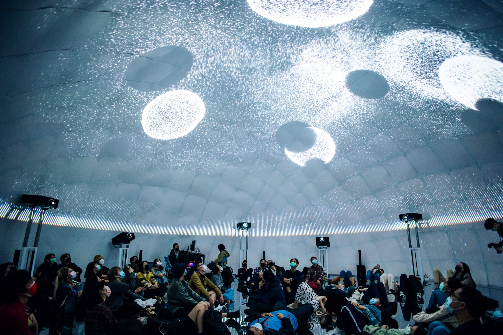
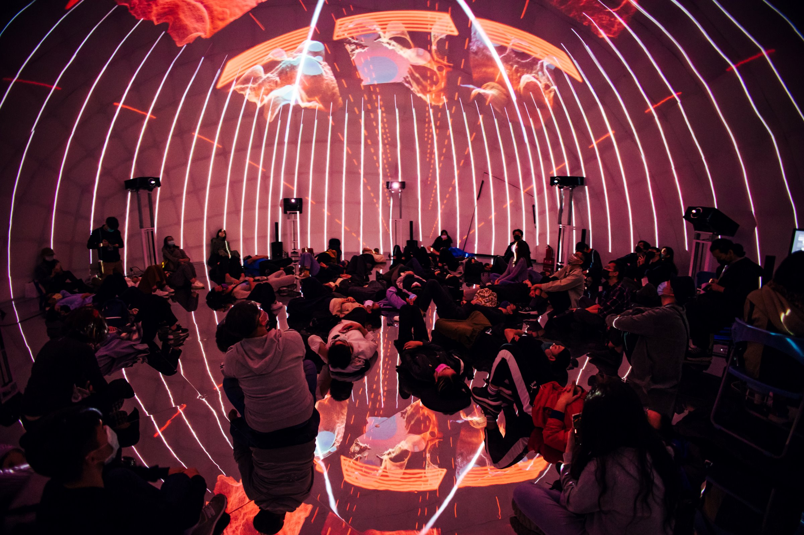
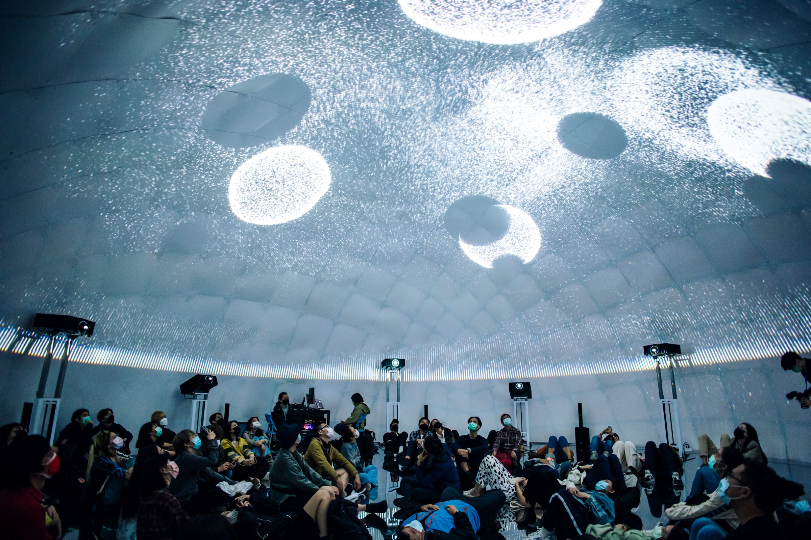
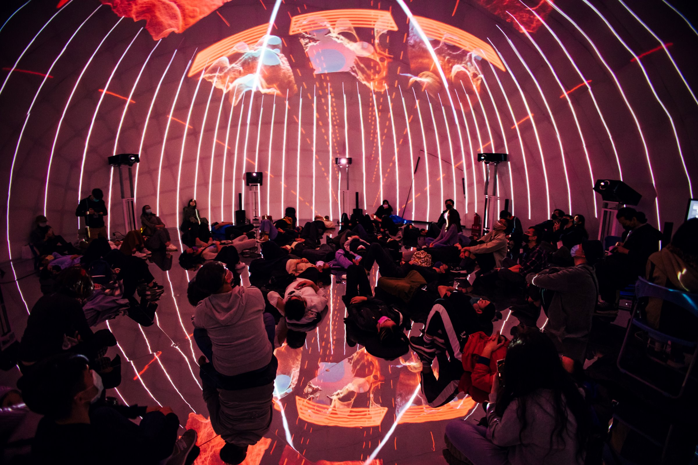
FUTURE VISION LAB - Photos by Taiwan Contemporary Culture Lab
 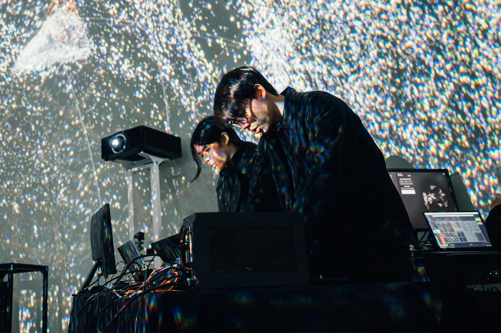
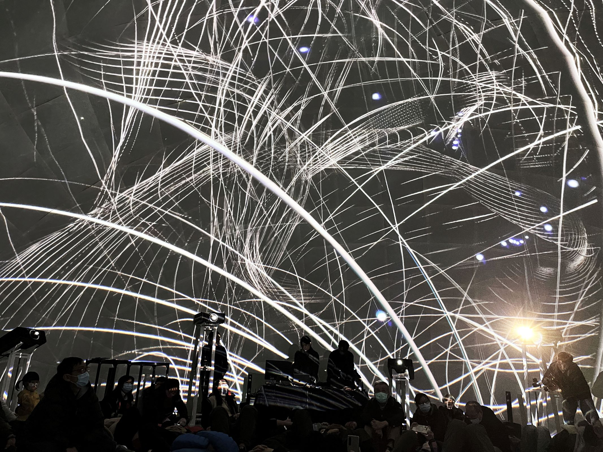
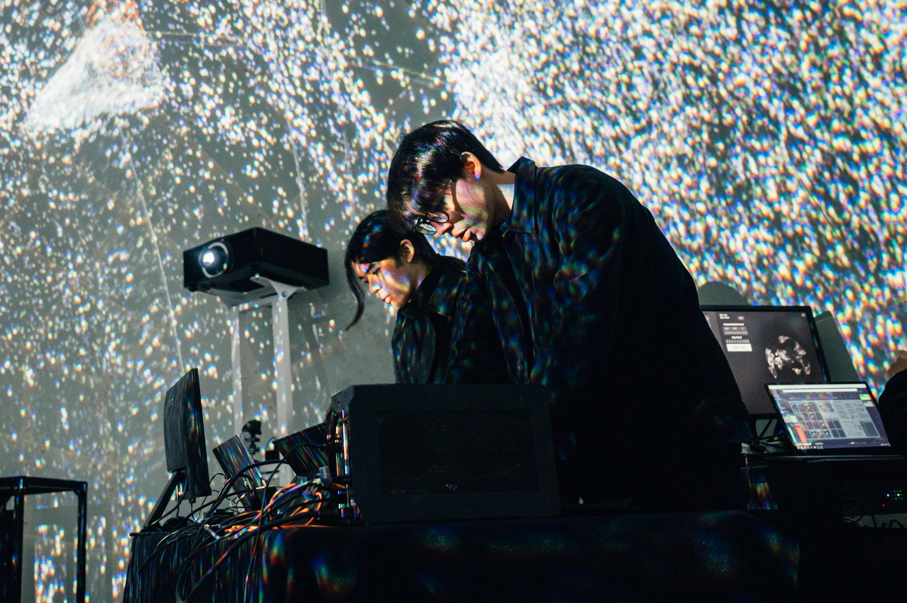
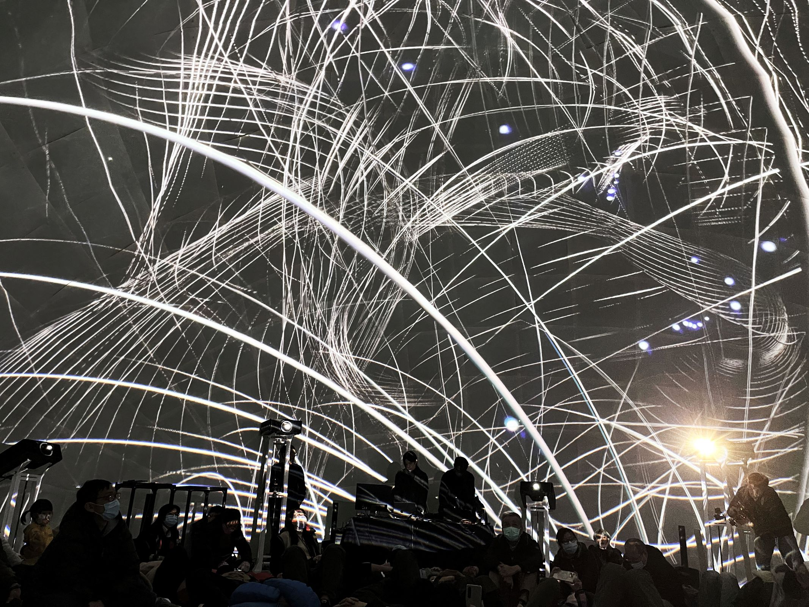
FUTURE VISION LAB - Photos by Taiwan Contemporary Culture Lab
 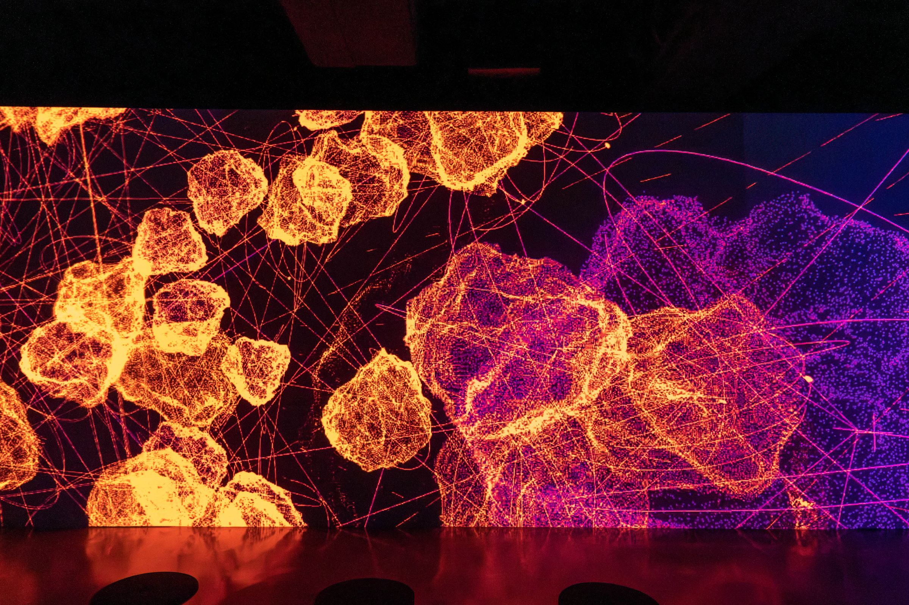
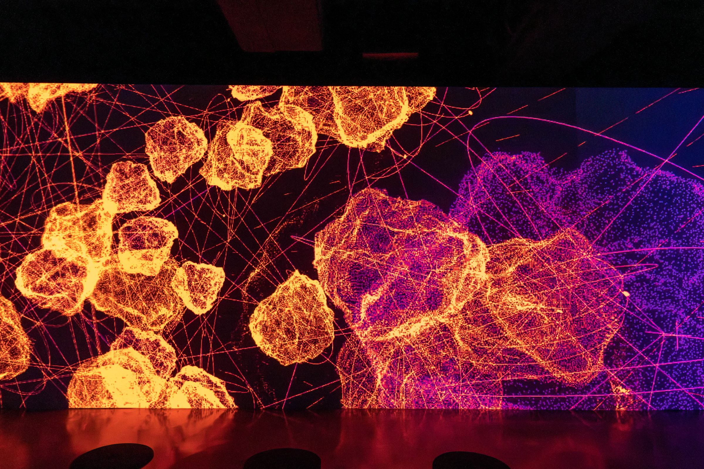
Photos by 沈庭華


 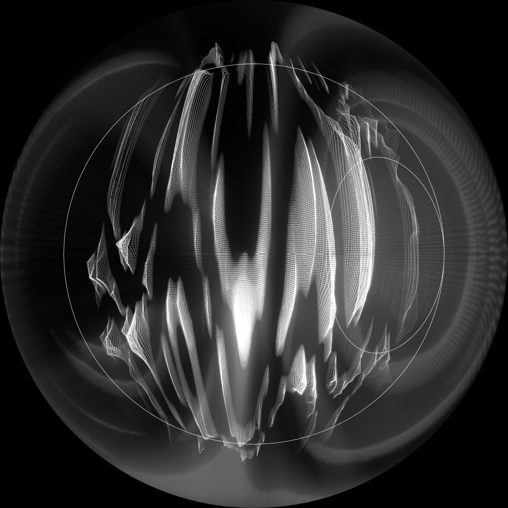
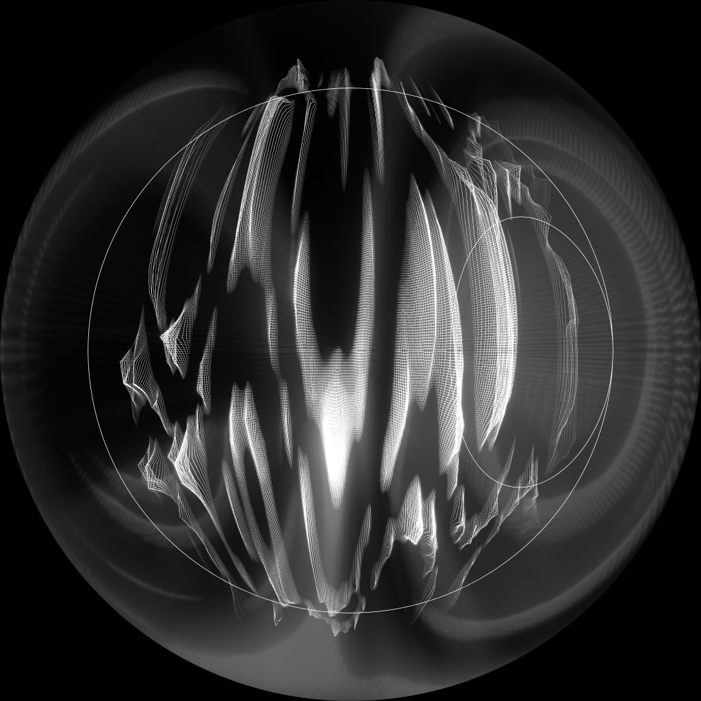
FUTURE VISION LAB - Photos by Taiwan Contemporary Culture Lab
Links
Video archive INNERSTAR - MIFF